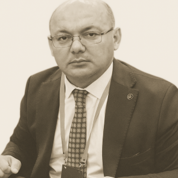

Direktor tabrigi

Hurmatli abituriyentlar, talabalar, ota-onalar va hamkorlar! O‘rta-Chirchiq tumani 2-sonli Texnikumning rasmiy veb-saytiga xush kelibsiz. 2009-yilda tashkil etilgan kollejimiz turli talab yuqori bo‘lgan sohalarda yuqori malakali mutaxassislarni tayyorlashga qaratilgan yetakchi ta’lim muassasasidir.
Biz o‘z moddiy-texnik bazamiz, zamonaviy o‘quv dasturlarimiz va tajribali o‘qituvchilar jamoasi bilan faxrlanamiz. Amaliyotga yo‘naltirilgan va dual ta’lim tizimiga alohida e’tibor qaratilmoqda, bu esa bitiruvchilarimizga mehnat bozorida raqobatbardosh bo‘lish imkonini beradi. Sizni do‘stona jamoamizga qo‘shilishga taklif qilamiz!
Hurmat bilan, Direktor Shermatov Avaz Alijanovich
Nima uchun bizni tanlaysiz?
Amaliy ta’lim
Amaliy ko’nikmalar va real loyihalarga e’tibor.
Tajribali o’qituvchilar
Yuqori malakali pedagogik jamoa.
Zamonaviy jihozlar
Ilg’or uskunalar va texnologiyalarda ta’lim.
Hamkorlik aloqalari
Yetakchi korxonalar bilan yaqin hamkorlik.
студентов
лет работы
специальности
преподавателей
Bizning hamkorlarimiz
Qorasuv Mebel Savdo MCHJ
Mebel ishlab chiqarish va savdo sohasida faoliyat yurituvchi korxona.
SavdoEko Soft Tekstil Korxonasi
Zamonaviy to'qimachilik mahsulotlarini ishlab chiqaruvchi korxona.
To'qimachilikRadiante Textile MCHJ
Yuqori sifatli to'qimachilik mahsulotlari ishlab chiqaruvchi zamonaviy korxona.
To'qimachilik